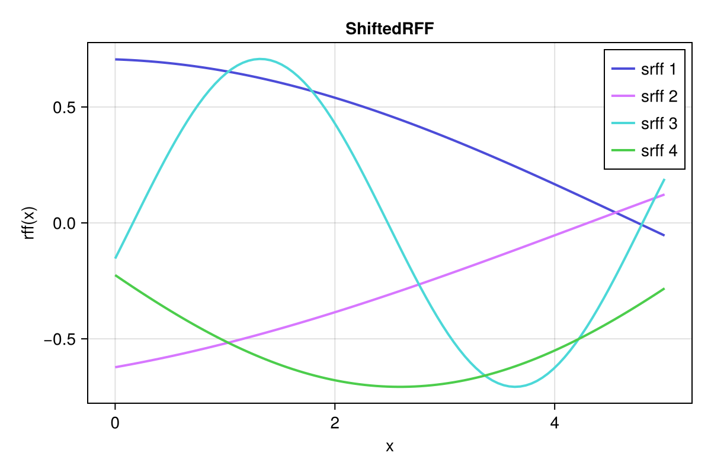
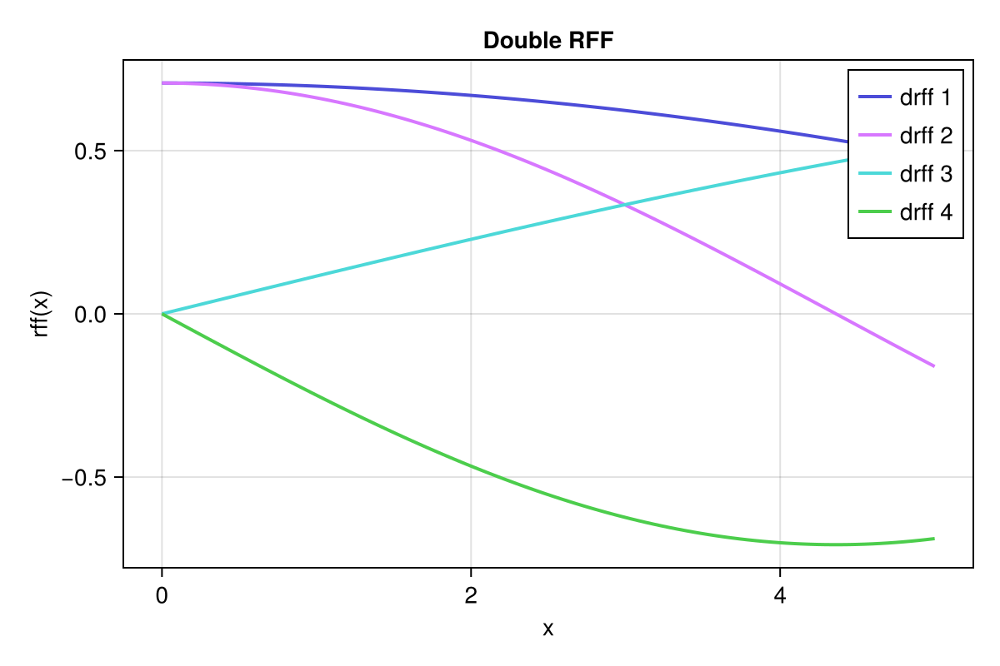
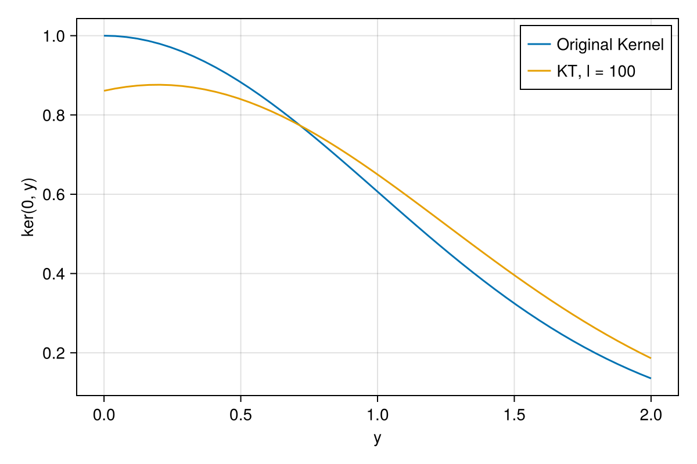
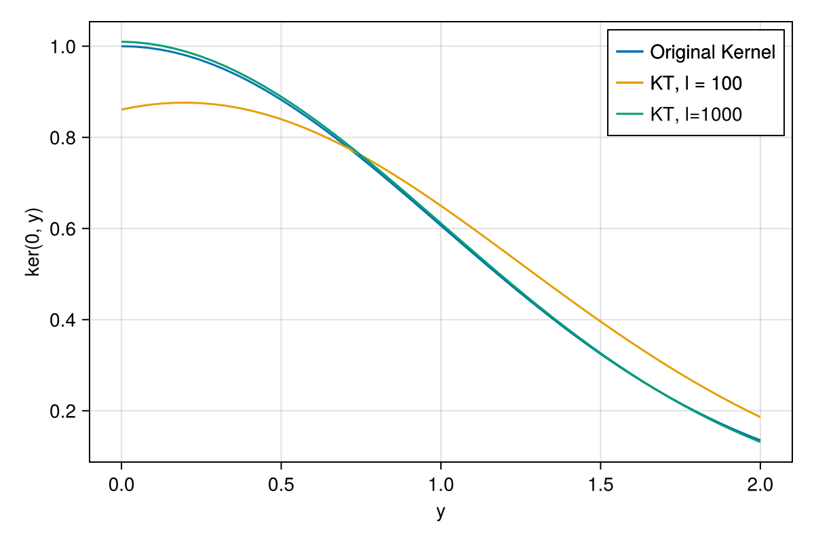
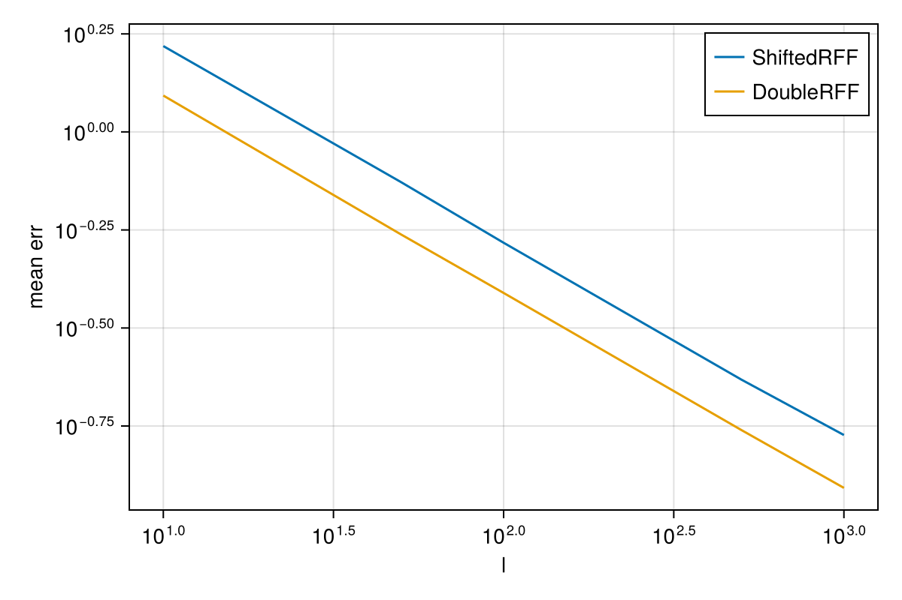

Random Fourier Features

You are seeing the HTML output generated by Documenter.jl and Literate.jl from the Julia source file. The corresponding notebook can be viewed in nbviewer.
One of the reasons to be interested in the spectral density of a kernel is that it allows us to approximate a GP Prior. In this notebook we show the two feature functions implemented in KernelSpectralDensities.jl and how to use them.
Load required packages
using KernelSpectralDensities
using StatsBase
using LinearAlgebra
using CairoMakieIntro
In general, feature functions allow us to project an input into a higher-dimensional space, which is useful for a variety of tasks. For example, we can use them to approximate a kernel using the "kernel trick".
A special class of feature functions are "random Fourier features", derived from the Fourier transform, which we saw in add link from other example. KernelSpectralDensities implements two types of random Fourier features, ShiftedRFF and DoubleRFF.
For this example we use the simple squared exponential kernel.
ker = SqExponentialKernel()
S = SpectralDensity(ker, 1);ShiftedRFF
The ShiftedRFF feature function is somewhat more common, and has been used in papers such as Efficiently sampling functions from Gaussian process posteriors. It is defined as
\[ \varphi_i(x) = \sqrt{2 / l} \cos(2 π ((w_i^T x) + b_i))\]
where $w_i$ is sampled from the spectral density $S$, $b_i$ is uniformly sampled from $[0, 2π]$ and $l$ is the number of sampled frequencies, which is also the number of features.
We generate a set of 4 feature functions, which we can evaluate at any point.
srff = ShiftedRFF(S, 4)
srff(1.0)4-element Vector{Float64}:
0.6548677131831898
-0.5200719301446635
0.6411909621852575
-0.5099471013041686If we plot them, we see that each feature function is a harmonic with varying frequency and phase.
x = range(0, 5; length=100)
f = Figure(; size=(600, 400))
ax = Axis(f[1, 1]; xlabel="x", ylabel="rff(x)", title="ShiftedRFF")
series!(ax, x, reduce(hcat, srff.(x)); labels=["srff $i" for i in 1:4])
axislegend(ax; position=:rt)
f
DoubleRFF
The DoubleRFF feature function is less common, but is theoretically equivalent to the ShiftedRFF feature function. It is defined as
\[ \varphi(x) = \sqrt{1 / l} \begin{pmatrix} \cos(2 π w' x) \\ \sin(2 π w' x) \end{pmatrix}\]
where $w'$ is sampled from the spectral density $S$, with a total of $l/2$ sampled frequencies. Here, each function is effectively two feature functions in one, so specifying $l$ will result in $l/2$ samples but an $l$ dimensional feature vector.
We again generate a set of 4 feature functions.
drff = DoubleRFF(S, 4)
drff(1.0)4-element Vector{Float64}:
0.6975708020306294
0.6617360792561624
0.11573666728545728
-0.24920947295534734We plot these features as well
f = Figure(; size=(600, 400))
ax = Axis(f[1, 1]; xlabel="x", ylabel="rff(x)", title="Double RFF")
series!(ax, x, reduce(hcat, drff.(x)); labels=["drff $i" for i in 1:4])
axislegend(ax; position=:rt)
f
Approximating a kernel
We can use the feature functions to approximate a kernel, using the kernel trick
\[ k(x, x') = \langle \varphi(x), \varphi(x') \rangle\]
Comparing with the Kernel Densities example, we note that this is effective a Monte Carlo approximation of inverse Fourier transform.
To demonstrate that this works, we generate some feature functions and see how well they recover the kernel.
rff = ShiftedRFF(S, 100)
kt(x, y) = dot(rff(x), rff(y))
x_plot = range(0, 2; length=50)
f = Figure(; size=(600, 400))
ax = Axis(f[1, 1]; xlabel="y", ylabel="ker(0, y)", title="")
lines!(ax, x_plot, ker.(0, x_plot); label="Original Kernel")
lines!(ax, x_plot, kt.(0, x_plot); label="KT, l = 100")
axislegend(ax)
f
Clearly this is not quite correct, and we can quantify this by checking the error.
norm(ker.(0, x_plot) .- kt.(0, x_plot))0.4832636722051011Fortunately, we can improve the approximation by using more features,
rff1000 = ShiftedRFF(S, 5000)
kt1000(x, y) = dot(rff1000(x), rff1000(y))
lines!(ax, x_plot, kt1000.(0, x_plot); label="KT, l=1000")
axislegend(ax)
f
which also reduces the error.
norm(ker.(0, x_plot) .- kt1000.(0, x_plot))0.03836805701093269Comparing the RFFs
In the section above we used the ShiftedRFF feature function, but what about the DoubleRFF? Let's compare the two!. First we define some helper functions.
function kt_error(ker, rff, S, l, x)
rff = rff(S, l)
kt(x, y) = dot(rff(x), rff(y))
return norm(ker.(0, x) .- kt.(0, x))
end
function mean_kt_error(ker, rff, S, l, x, n)
return mean([kt_error(ker, rff, S, l, x) for _ in 1:n])
end
nothing # hideNow we compute the mean error for both feature functions, using 100 features when recovering the original kernel. To reduce the effect of randomness, we average over 5000 runs.
srff_err = mean_kt_error(ker, ShiftedRFF, S, 100, x_plot, 5000)0.5326873604442691drff_err = mean_kt_error(ker, DoubleRFF, S, 100, x_plot, 5000)0.38624944511770737We see that the double rff has a lower average error. This continues to hold for higher number of features.
srff_err = mean_kt_error(ker, ShiftedRFF, S, 1000, x_plot, 5000)0.16634810006753353drff_err = mean_kt_error(ker, DoubleRFF, S, 1000, x_plot, 5000)0.12353823352267429Comparison, continued
Lastly, we show a loglog plot of the mean error as a function of the number of features. We see that both feature functions have the order of error scaling, but the DualRFF error has a small offset, resulting in a lower error. This is especially impactful for a small number of features.
l_plot = [10, 50, 100, 500, 1000]
srff_comp = [mean_kt_error(ker, ShiftedRFF, S, l, x_plot, 5000) for l in l_plot]
drff_comp = [mean_kt_error(ker, DoubleRFF, S, l, x_plot, 5000) for l in l_plot]
f = Figure(; size=(600, 400))
ax = Axis(f[1, 1]; xlabel="l", ylabel="mean err", title="", xscale=log10, yscale=log10)
lines!(ax, l_plot, srff_comp; label="ShiftedRFF")
lines!(ax, l_plot, drff_comp; label="DoubleRFF")
axislegend(ax)
f
Package and system information
Package information (click to expand)
Status `~/work/KernelSpectralDensities.jl/KernelSpectralDensities.jl/examples/2-features/Project.toml` [13f3f980] CairoMakie v0.13.1 [0b91fe84] DisplayAs v0.1.6 [027d52a2] KernelSpectralDensities v0.2.0 `/home/runner/work/KernelSpectralDensities.jl/KernelSpectralDensities.jl#main` [98b081ad] Literate v2.20.1 [2913bbd2] StatsBase v0.34.4To reproduce this notebook's package environment, you can download the full Manifest.toml.
System information (click to expand)
Julia Version 1.11.3 Commit d63adeda50d (2025-01-21 19:42 UTC) Build Info: Official https://julialang.org/ release Platform Info: OS: Linux (x86_64-linux-gnu) CPU: 4 × AMD EPYC 7763 64-Core Processor WORD_SIZE: 64 LLVM: libLLVM-16.0.6 (ORCJIT, znver3) Threads: 1 default, 0 interactive, 1 GC (on 4 virtual cores) Environment: JULIA_PKG_SERVER_REGISTRY_PREFERENCE = eager JULIA_LOAD_PATH = :/home/runner/.julia/packages/JuliaGPsDocs/7M86H/src
This page was generated using Literate.jl.